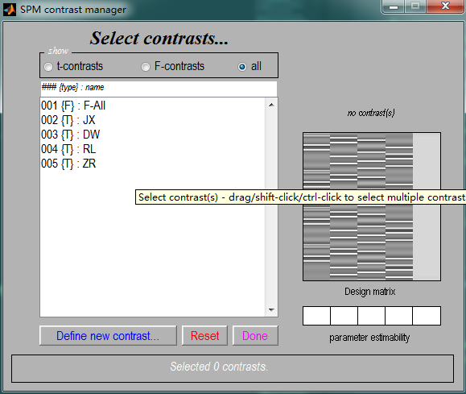
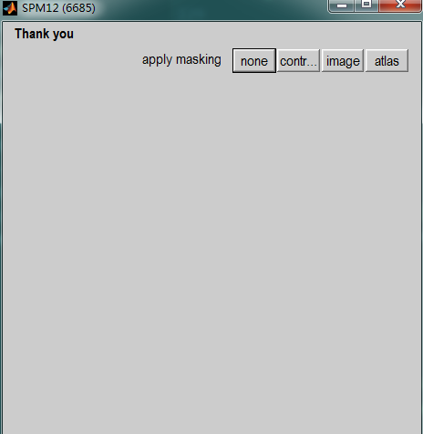

SPM是处理脑成像数据的一个综合性软件，基于matlab实现，里面有大量的函数都可以抽取出来单独使用完成某一个功能。使用其中的函数工作可以大大提高分析处理数据的便捷性，便于实现批量处理和大规模数据处理。
获得窗口的句柄保存下窗口正在显示的图像
1 | Fgraph = spm_figure('GetWin','Graphics'); |
打印SPM头信息，包括时间和日期以及执行的函数名称
1 | spm('FnBanner',mfilename,SVNid); |
获得文件P的头信息
1 | P = {'D:\FMRI_ROOT\YANTAI\ANALYSIS\pre_processing\20160911002\ep2d_bold_moco_p2_rest_0006\af20160911002-182750-00006-00006-1.img', |
获得图像某个坐标的值
1 | V = {'D:\FMRI_ROOT\YANTAI\ANALYSIS\first_level\20160911002\beta_0001.img'}; |
ROI的定义
SPM中Region of Interest(ROI)的定义使用的是函数spm_ROI.m,在SPM工具包中查找该名称即可找到它。
SPM中的函数默认都是通过交互的方式获得需要的参数的，类似这样的形式，spm_input('VOI definition...','!+1','b',def,[],1);，当我们需要批量处理的时候，只需要找到相关的参数，注释掉spm_input...，以传入参数替代即可。例如，假如我们想要修改spm_ROI.m使它能够根据输入的MNI坐标定义一个球形的ROI,可以这样修改：
- 找到下面这段代码：
1
2
3
4
5
6
7
8
9
10
11
12
13
14
15
16
17if ~isfield(xY,'def')
def = {'sphere','box','cluster','mask'};
if isfield(xY,'rej')
if ~isfield(xY,'M')
xY.rej = {xY.rej{:} 'cluster'};
end
else
if isfield(xY,'M')
xY.rej = {};
else
xY.rej = {'cluster'};
end
end
[q, i] = setdiff(def,xY.rej);
def = def(sort(i));
xY.def = spm_input('VOI definition...','!+1','b',def,[],1);
end
其中最后一条语句xY.def = spm_input('VOI definition...','!+1','b',def,[],1);是定义需要什么类型的ROI的，原来的代码里面需要用户输入，这里我们把这句话注视掉，用xY.def = input_xyz;代替；这里需要注意的是，input_xyz是3行1列的列向量，表示MNI坐标。当不知道数据的格式的时候，最好在matlab命令窗口执行修改之前的spm_input(),查看返回的是什么类型的数据。
- 然后找到下面的代码：
1
2
3
4
5
6
7
8
9
10case 'sphere'
%----------------------------------------------------------------------
if ~isfield(xY,'xyz') || isempty(xY.xyz)
xY.xyz = spm_input('sphere centre [x y z] {mm}',...
'!+0','r','0 0 0',3);
end
if ~isfield(xY,'spec')
xY.spec = spm_input('sphere radius (mm)','!+0','r',0,1,[0,Inf]);
end
xY.str = sprintf('%0.1fmm sphere',xY.spec);
这段代码是当上面定义了要使用球形的ROI时，球形ROI需要的一些参数。可以揽到，这里也是用交互的方式输入的参数，这里我们修改成传入参数的形式。xY.xyz = input_xyz; xY.spec = input_radius;
该函数原来的调用方式是[xY, XYZmm, j] = spm_ROI(xY, XYZmm),由于我们新加入了传入参数，所以我们修改原来的函数为下面这样的形式：[xY, XYZmm, j] = spm_ROI_extend(xY, XYZmm,input_def,input_xyz,input_radius), 最后，最好把新加入的参数的含义写在下面的注释中，这样就可以使用help spm_ROI查看到该函数的使用方法。另外，自己改写的函数最好换一个名字。
一个完整的例子：1
2
3
4
5
6
7
8
9
10
11
12
13
14
15
16
17
18
19
20
21
22
23
24
25
26
27
28
29
30
31
32
33
34
35
36
37
38
39
40
41
42
43
44
45
46
47
48
49
50
51
52
53
54
55
56
57
58
59
60
61
62
63
64
65
66
67
68
69
70
71
72
73
74
75
76
77
78
79
80
81
82
83
84
85
86
87
88
89
90
91
92
93
94
95
96
97
98
99
100
101
102
103
104
105
106
107
108
109
110
111
112
113
114
115
116
117
118
119
120
121
122
123
124
125
126
127
128
129
130
131
132
133
134
135
136
137
138
139
140
141
142
143
144
145
146
147
148
149
150
151
152
153
154
155
156
157
158
159
160
161
162
163
164
165
166
167
168
169
170
171
172
173
174
175
176
177
178
179
180
181
182
183function [xY, XYZmm, j] = spm_ROI_extend(xY, XYZmm,input_def,input_xyz,input_radius)
% Region of Interest specification
% input_def : one of {'sphere','box','cluster','mask'};e.g. sphere
% input_xyz : MNI_cor, e.g. [2;2;2]
% input_radius : r of sphere, e.g. 12
% FORMAT xY = spm_ROI(xY)
% xY - VOI structure
% xY.def - VOI definition [sphere, box, mask, cluster, all]
% xY.rej - cell array of disabled VOI definition options
% xY.xyz - centre of VOI {mm}
% xY.spec - VOI definition parameters
% xY.str - description of the VOI
%
% FORMAT [xY, XYZmm, j] = spm_ROI(xY, XYZmm)
% XYZmm - [3xm] locations of voxels {mm}
% If an image filename, an spm_vol structure or a NIfTI object is
% given instead, XYZmm will be initialised to all voxels within
% the field of view of that image.
%
% XYZmm - [3xn] filtered locations of voxels {mm} (m>=n) within VOI xY
% j - [1xn] indices of input locations XYZmm within VOI xY
%__________________________________________________________________________
% Copyright (C) 2008-2014 Wellcome Trust Centre for Neuroimaging
% Karl Friston, Guillaume Flandin
% $Id: spm_ROI.m 6079 2014-06-30 18:25:37Z spm $
if nargin < 2 && nargout > 1
error('Too many output arguments.');
end
try, xY; catch, xY = []; end
%-Specify ROI
%==========================================================================
if ~isfield(xY,'def')
def = {'sphere','box','cluster','mask'};
if isfield(xY,'rej')
if ~isfield(xY,'M')
xY.rej = {xY.rej{:} 'cluster'};
end
else
if isfield(xY,'M')
xY.rej = {};
else
xY.rej = {'cluster'};
end
end
[q, i] = setdiff(def,xY.rej);
def = def(sort(i));
%xY.def = spm_input('VOI definition...','!+1','b',def,[],1);
xY.def = input_def; %========{'sphere','box','cluster','mask'};==============================================
end
%-ROI parameters
%--------------------------------------------------------------------------
switch lower(xY.def)
case 'sphere'
%----------------------------------------------------------------------
if ~isfield(xY,'xyz') || isempty(xY.xyz)
%xY.xyz = spm_input('sphere centre [x y z] {mm}',...
% '!+0','r','0 0 0',3);
xY.xyz = input_xyz; %=========[2;2;2]=============================================
end
if ~isfield(xY,'spec')
%xY.spec = spm_input('sphere radius (mm)','!+0','r',0,1,[0,Inf]);
xY.spec = input_radius; % ============12======================================
end
xY.str = sprintf('%0.1fmm sphere',xY.spec);
case 'box'
%----------------------------------------------------------------------
if ~isfield(xY,'xyz') || isempty(xY.xyz)
xY.xyz = spm_input('box centre [x y z] {mm}',...
'!+0','r','0 0 0',3);
end
if ~isfield(xY,'spec')
xY.spec = spm_input('box dimensions [x y z] {mm}',...
'!+0','r','0 0 0',3);
end
if length(xY.spec) < 3
xY.spec = xY.spec(1)*[1 1 1];
end
xY.str = sprintf('%0.1f x %0.1f x %0.1f mm box',xY.spec);
case 'mask'
%----------------------------------------------------------------------
if ~isfield(xY,'spec')
xY.spec = spm_vol(spm_select(1,'image','Specify Mask'));
else
if ~isstruct(xY.spec)
xY.spec = spm_vol(xY.spec);
end
end
str = spm_file(xY.spec.fname,'short30');
str = regexprep(str, {'\\' '\^' '_' '{' '}'}, ...
{'\\\\' '\\^' '\\_' '\\{' '\\}'}); % Escape TeX special characters
xY.str = sprintf('image mask: %s',str);
case 'cluster'
%----------------------------------------------------------------------
if ~isfield(xY,'xyz') || isempty(xY.xyz)
xY.xyz = spm_input('seed voxel [x y z] {mm}',...
'!+0','r','0 0 0',3);
end
if ~isfield(xY,'M')
xY.M = spm_input('affine transformation matrix',...
'!+0','r','0 0 0',[4 4]);
end
xY.spec = [];
xY.str = sprintf('cluster (seed voxel: %0.1f %0.1f %0.1f)',xY.xyz);
case 'all'
%----------------------------------------------------------------------
xY.str = 'all';
otherwise
%----------------------------------------------------------------------
error('Unknown VOI type.');
end
if nargin < 2, return; end
%-'Estimate' ROI
%==========================================================================
%-Argument check
%--------------------------------------------------------------------------
if ischar(XYZmm) && isempty(XYZmm)
XYZmm = spm_select(1,'image','Specify Image');
end
if ischar(XYZmm), XYZmm = spm_vol(XYZmm); end
if isa(XYZmm,'nifti')
XYZmm = struct('dim',size(XYZmm.dat), 'mat',XYZmm.mat);
end
if isstruct(XYZmm) % spm_vol
[R,C,P] = ndgrid(1:XYZmm.dim(1),1:XYZmm.dim(2),1:XYZmm.dim(3));
RCP = [R(:)';C(:)';P(:)';ones(1,numel(R))];
XYZmm = XYZmm.mat(1:3,:)*RCP;
clear R C P RCP
end
if isempty(XYZmm), XYZmm = zeros(3,0); end
%-Filter location of voxels
%--------------------------------------------------------------------------
Q = ones(1,size(XYZmm,2));
switch lower(xY.def)
case 'sphere'
%----------------------------------------------------------------------
j = find(sum((XYZmm - xY.xyz*Q).^2) <= xY.spec^2);
case 'box'
%----------------------------------------------------------------------
j = find(all(abs(XYZmm - xY.xyz*Q) <= xY.spec(:)*Q/2));
case 'mask'
%----------------------------------------------------------------------
XYZ = xY.spec.mat \ [XYZmm; Q];
j = find(spm_sample_vol(xY.spec, XYZ(1,:), XYZ(2,:), XYZ(3,:),0) > 0);
case 'cluster'
%----------------------------------------------------------------------
[x, i] = spm_XYZreg('NearestXYZ',xY.xyz,XYZmm);
XYZ = round(xY.M \ [XYZmm; Q]);
A = spm_clusters(XYZ);
j = find(A == A(i));
case 'all'
%----------------------------------------------------------------------
j = 1:size(XYZmm,2);
otherwise
%----------------------------------------------------------------------
error('Unknown VOI type.');
end
XYZmm = XYZmm(:,j);
if strcmpi(xY.def,'mask') && ~isempty(XYZmm), xY.xyz = mean(XYZmm,2); end
根据SPM.mat获得SPM，xSPM等结构数据
Compute a specified and thresholded SPM following estimation



实现上面图形界面所定义的操作，选择一个Contrast, 定义一个P值的大小，得到相关的图像结构信息，SPM中的函数是spm_getSPM, 函数调用的原型是[SPM,xSPM] = spm_getSPM(varargin), 它的主要作用是通过SPM.mat文件获得SPM,xSPM等结构，这两种结构在后在许多方法中作为输入参数。
SPM中Result面板中对应的函数
想实现这个面板中的一些操作功能，可以查看对应的函数spm_result_ui;1
2
3
4% FORMAT [hreg,xSPM,SPM] = spm_results_ui('Setup',xSPM)
% Query SPM and setup GUI using a xSPM input structure. This allows to run
% results setup without user interaction. See spm_getSPM for details of
% allowed fields.
抽取时间序列函数
在结果面板中抽取时间序列的操作主要涉及到两个函数，spm_regions和spm_ROI;最核心的定义ROI的代码在spm_ROI中。
附上一个可以根据输入的坐标抽取球形VOI的修改版代码：1
2
3
4
5
6
7
8
9
10
11
12
13
14
15
16
17
18
19
20
21
22
23
24
25
26
27
28
29
30
31
32
33
34
35
36
37
38
39
40
41
42
43
44
45
46
47
48
49
50
51
52
53
54
55
56
57
58
59
60
61
62
63
64
65
66
67
68
69
70
71
72
73
74
75
76
77
78
79
80
81
82
83
84
85
86
87
88
89
90
91
92
93
94
95
96
97
98
99
100
101
102
103
104
105
106
107
108
109
110
111
112
113
114
115
116
117
118
119
120
121
122
123
124
125
126
127
128
129
130
131
132
133
134
135
136
137
138
139
140
141
142
143
144
145
146
147
148
149
150
151
152
153
154
155
156
157
158
159
160
161
162
163
164
165
166
167
168
169
170
171
172
173
174
175
176
177
178
179
180
181
182
183
184
185
186
187
188
189
190
191
192
193
194
195
196
197
198
199
200
201
202
203
204
205
206
207
208
209
210
211
212
213
214
215
216
217
218
219
220
221
222
223
224
225
226
227
228
229
230
231
232
233function [Y,xY] = spm_regions_extend(xSPM,SPM,hReg,xY,Input_VOINames,Input_is,input_def,input_xyz,input_radius)
% VOI time-series extraction of adjusted data (& local eigenimage analysis)
% FORMAT [Y xY] = spm_regions(xSPM,SPM,hReg,[xY]);
% FORMAT [Y xY] = spm_regions(xSPM,SPM,hReg,[xY],Input_VOIName,Input_i)
% Input_VOIName : 抽取的VOI的名称
% Input_i : adjust_contrst 这里选择那个F-All的,整数，1 是dont adjust, 2 是F-All.
% Input_VOI_path : 抽取VOI所使用的Mask的路径;
% Input_is : Input_i
% input_def : ROI类型的定义,sphere
% input_xyz : MNI 坐标
% input_radius : 半径
if nargin < 4, xY = []; end
if nargin > 5
Input_VOIName = Input_VOINames;
Input_i =Input_is;
xY = [];
end
%-Get figure handles
%--------------------------------------------------------------------------
Finter = spm_figure('FindWin','Interactive');
if isempty(Finter), noGraph = 1; else noGraph = 0; end
header = get(Finter,'Name');
set(Finter,'Name','VOI time-series extraction');
if ~noGraph, Fgraph = spm_figure('GetWin','Graphics'); end
%-Find nearest voxel [Euclidean distance] in point list
%--------------------------------------------------------------------------
% if isempty(xSPM.XYZmm)
% spm('alert!','No suprathreshold voxels!',mfilename,0);
% Y = []; xY = [];
% return
% end
% try
% xyz = xY.xyz;
% catch
% xyz = spm_XYZreg('NearestXYZ',...
% spm_XYZreg('GetCoords',hReg),xSPM.XYZmm);
% xY.xyz = xyz;
% end
% and update GUI location
%--------------------------------------------------------------------------
%spm_XYZreg('SetCoords',xyz,hReg);
%-Get adjustment options and VOI name
%--------------------------------------------------------------------------
% if ~noGraph
% if ~isempty(xY.xyz)
% posstr = sprintf('at [%3.0f %3.0f %3.0f]',xY.xyz);
% else
% posstr = '';
% end
% spm_input(posstr,1,'d','VOI time-series extraction');
% end
if ~isfield(xY,'name')
xY.name = Input_VOIName; %name of region char字符串类型 ========================================================================
end
if ~isfield(xY,'Ic')
q = 0;
Con = {'<don''t adjust>'};
for i = 1:length(SPM.xCon)
if strcmp(SPM.xCon(i).STAT,'F')
q(end + 1) = i;
Con{end + 1} = SPM.xCon(i).name;
end
end
i = Input_i; % adjust_contrst 这里选择那个F-All的,整数，1 是dont adjust, 2 是F-All. =====================================================================
xY.Ic = q(i);
end
%-If fMRI data then ask user to select session
%--------------------------------------------------------------------------
if isfield(SPM,'Sess') && ~isfield(xY,'Sess')
s = length(SPM.Sess);
if s > 1
s = spm_input('which session','!+1','n1',s,s);
end
xY.Sess = s;
end
%-Specify VOI
%--------------------------------------------------------------------------
xY.M = xSPM.M;
[xY, xY.XYZmm, Q] = spm_ROI_extend(xY, xSPM.XYZmm,input_def,input_xyz,input_radius);%--------------------------------------------------------------------
try, xY = rmfield(xY,'M'); end
try, xY = rmfield(xY,'rej'); end
if isempty(xY.XYZmm)
warning('Empty region.');
Y = [];
return;
end
%-Extract required data from results files
%==========================================================================
spm('Pointer','Watch')
%-Get raw data, whiten and filter
%--------------------------------------------------------------------------
y = spm_get_data(SPM.xY.VY,xSPM.XYZ(:,Q));
y = spm_filter(SPM.xX.K,SPM.xX.W*y);
%-Computation
%==========================================================================
%-Remove null space of contrast
%--------------------------------------------------------------------------
if xY.Ic
%-Parameter estimates: beta = xX.pKX*xX.K*y
%----------------------------------------------------------------------
beta = spm_get_data(SPM.Vbeta,xSPM.XYZ(:,Q));
%-subtract Y0 = XO*beta, Y = Yc + Y0 + e
%----------------------------------------------------------------------
y = y - spm_FcUtil('Y0',SPM.xCon(xY.Ic),SPM.xX.xKXs,beta);
end
%-Confounds
%--------------------------------------------------------------------------
xY.X0 = SPM.xX.xKXs.X(:,[SPM.xX.iB SPM.xX.iG]);
%-Extract session-specific rows from data and confounds
%--------------------------------------------------------------------------
try
i = SPM.Sess(xY.Sess).row;
y = y(i,:);
xY.X0 = xY.X0(i,:);
end
% and add session-specific filter confounds
%--------------------------------------------------------------------------
try
xY.X0 = [xY.X0 SPM.xX.K(xY.Sess).X0];
end
try
xY.X0 = [xY.X0 SPM.xX.K(xY.Sess).KH]; % Compatibility check
end
%-Remove null space of X0
%--------------------------------------------------------------------------
xY.X0 = xY.X0(:,any(xY.X0));
%-Compute regional response in terms of first eigenvariate
%--------------------------------------------------------------------------
[m n] = size(y);
if m > n
[v s v] = svd(y'*y);
s = diag(s);
v = v(:,1);
u = y*v/sqrt(s(1));
else
[u s u] = svd(y*y');
s = diag(s);
u = u(:,1);
v = y'*u/sqrt(s(1));
end
d = sign(sum(v));
u = u*d;
v = v*d;
Y = u*sqrt(s(1)/n);
%-Set in structure
%--------------------------------------------------------------------------
xY.y = y;
xY.u = Y;
xY.v = v;
xY.s = s;
%-Display VOI weighting and eigenvariate
%==========================================================================
if ~noGraph
% show position
%----------------------------------------------------------------------
spm_results_ui('Clear',Fgraph);
h1 = figure(Fgraph);
subplot(2,2,3)
spm_dcm_display(xY)
% show dynamics
%----------------------------------------------------------------------
subplot(2,2,4)
try
plot(SPM.xY.RT*[1:length(xY.u)],Y)
str = 'time (seconds}';
catch
plot(Y)
str = 'scan';
end
title(['1st eigenvariate: ' xY.name],'FontSize',10)
if strcmpi(xY.def,'mask')
[p,n,e] = fileparts(xY.spec.fname);
posstr = sprintf('from mask %s', [n e]);
else
posstr = sprintf('at [%3.0f %3.0f %3.0f]',xY.xyz);
end
str = { str;' ';...
sprintf('%d voxels in VOI %s',length(Q),posstr);...
sprintf('Variance: %0.2f%%',s(1)*100/sum(s))};
xlabel(str)
axis tight square
end
%-Save
%==========================================================================
str = ['VOI_' xY.name '.mat'];
if isfield(xY,'Sess') && isfield(SPM,'Sess')
str = sprintf('VOI_%s_%i.mat',xY.name,xY.Sess);
end
if spm_check_version('matlab','7') >= 0
save(fullfile(SPM.swd,str),'-V6','Y','xY')
else
save(fullfile(SPM.swd,str),'Y','xY')
end
fprintf(' VOI saved as %s\n',spm_str_manip(fullfile(SPM.swd,str),'k55'));
%-Reset title
%--------------------------------------------------------------------------
set(Finter,'Name',header);
spm('Pointer','Arrow')
print(h1,Input_VOINames,'-dpng');% 打印出PNG图片，还可以输出其他的格式，参考Matlab的print函数。
1 | function [xY, XYZmm, j] = spm_ROI_extend(xY, XYZmm,input_def,input_xyz,input_radius) |
调用上面两个函数的实现创建VOI的功能：1
2
3
4
5
6
7
8
9
10
11
12
13
14
15
16
17
18
19
20
21
22
23
24
25
26
27
28
29
30
31
32
33
34
35
36
37
38
39
40
41
42
43
44
45
46
47
48
49
50
51
52
53
54function createVOI(spmT_filepath,spm_mat_path)
% 功能： 使用特定的Mask抽取VOI。
% spm_mat_path : SPM.mat的完整路径，需要是做完FirstLevel之后的SPM.mat;
% Input_u : 抽取时间序列时使用的P值，一般默认是0.001，当抽取失败的时候，，适当调大可以确保成功；
% -----------------------------------------------------------------------------------------
% 配置信息：
% contrast_name ： First_Level时候设置的contrast,这里的顺序很重要，因为程序中使用数字表示每个contrast的；
% InputMask ： appying mask : 0 none ; 1 contrast ; 2 image ;默认是整数 0
% InputthresDesc : p value adjustment to control: 'FWE' or 'none'
% Input_k : extend threshold {voxel} 0 ; 默认是0
% xx_mask_path : 抽取的VOI使用的mask的绝对路径
% VOI_Mask ：抽取的VOI使用的mask的绝对路径
% Input_is ： adjust_contrst 这里选择那个F-All的,整数，1 是dont adjust, 2 是F-All，3个数字分别对应三个Mask的adjust_contrst。
%spmT_filepath = 'D:\FMRI_ROOT\YANTAI2\ANALYSIS\first_level_dcm_4class\HC\20160911002\spmF_0001.nii';
%spm_mat_path = 'D:\FMRI_ROOT\YANTAI2\ANALYSIS\first_level_dcm_4class\HC\20160911002\SPM.mat';
%xjview(spmT_filepath);
input_xyz_LMGN = [-12;-24;-8];
input_xyz_LA1 = [-54;-14;2];
input_xyz_LV1 = [-6;-74;6];
xyz_LMGN = find_peak_co(spmT_filepath,input_xyz_LMGN);
xyz_LA1 = find_peak_co(spmT_filepath,input_xyz_LA1);
xyz_LV1 = find_peak_co(spmT_filepath,input_xyz_LV1);
Ic = 1; % 要使用的contrast的编号，这里1是第一个contrast,这里是F contrast
InputMask = 0; % 不使用mask
InputthresDesc = 'none';
Input_u = 0.05; % 抽取VOI时使用的P值
Input_k = 0;
empty_bit='';
Input_is = 2;
input_def = 'sphere';
input_radius = 12;
VOI_name = 'LMGN'; %生成的VOI的名称
input_xyz = xyz_LMGN;
[SPM,xSPM] = spm_getSPM_extend(spm_mat_path,Ic,InputMask,InputthresDesc,Input_u,Input_k);
[hReg,xSPM,SPM] = spm_result_ui_extend('Setup',xSPM);
[Y xY] = spm_regions_extend(xSPM,SPM,hReg,empty_bit,VOI_name,Input_is,input_def,input_xyz,input_radius);
VOI_name = 'LA1'; %生成的VOI的名称
input_xyz = xyz_LA1;
[SPM,xSPM] = spm_getSPM_extend(spm_mat_path,Ic,InputMask,InputthresDesc,Input_u,Input_k);
[hReg,xSPM,SPM] = spm_result_ui_extend('Setup',xSPM);
[Y xY] = spm_regions_extend(xSPM,SPM,hReg,empty_bit,VOI_name,Input_is,input_def,input_xyz,input_radius);
VOI_name = 'LV1'; %生成的VOI的名称
input_xyz = xyz_LV1;
[SPM,xSPM] = spm_getSPM_extend(spm_mat_path,Ic,InputMask,InputthresDesc,Input_u,Input_k);
[hReg,xSPM,SPM] = spm_result_ui_extend('Setup',xSPM);
[Y xY] = spm_regions_extend(xSPM,SPM,hReg,empty_bit,VOI_name,Input_is,input_def,input_xyz,input_radius);